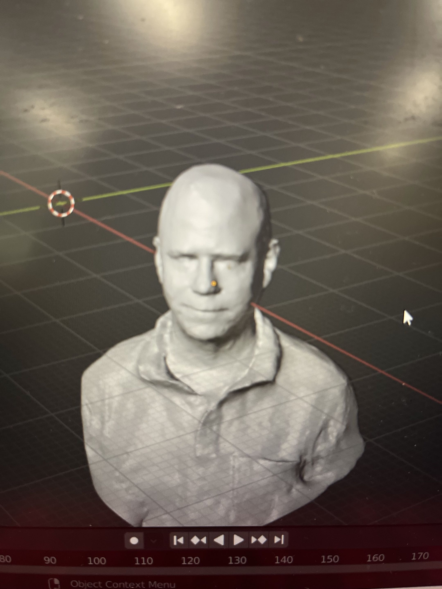
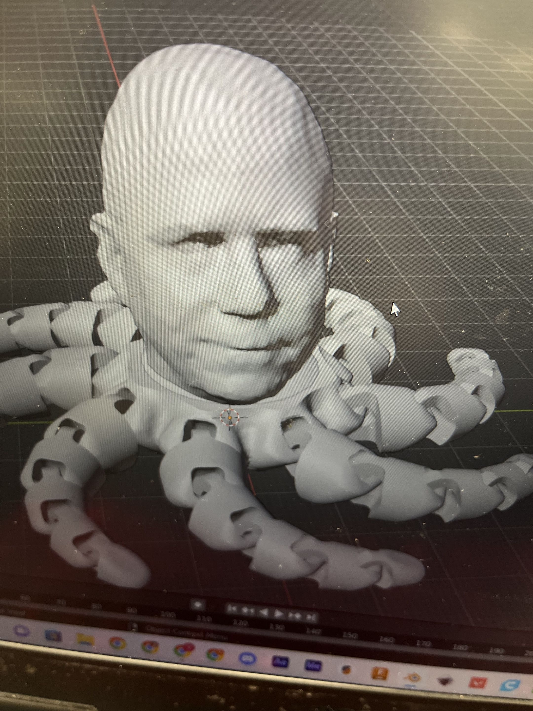
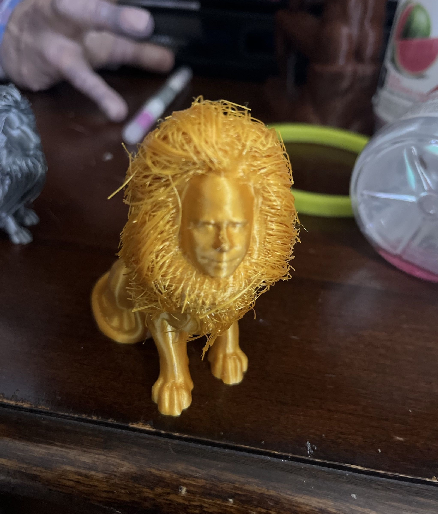
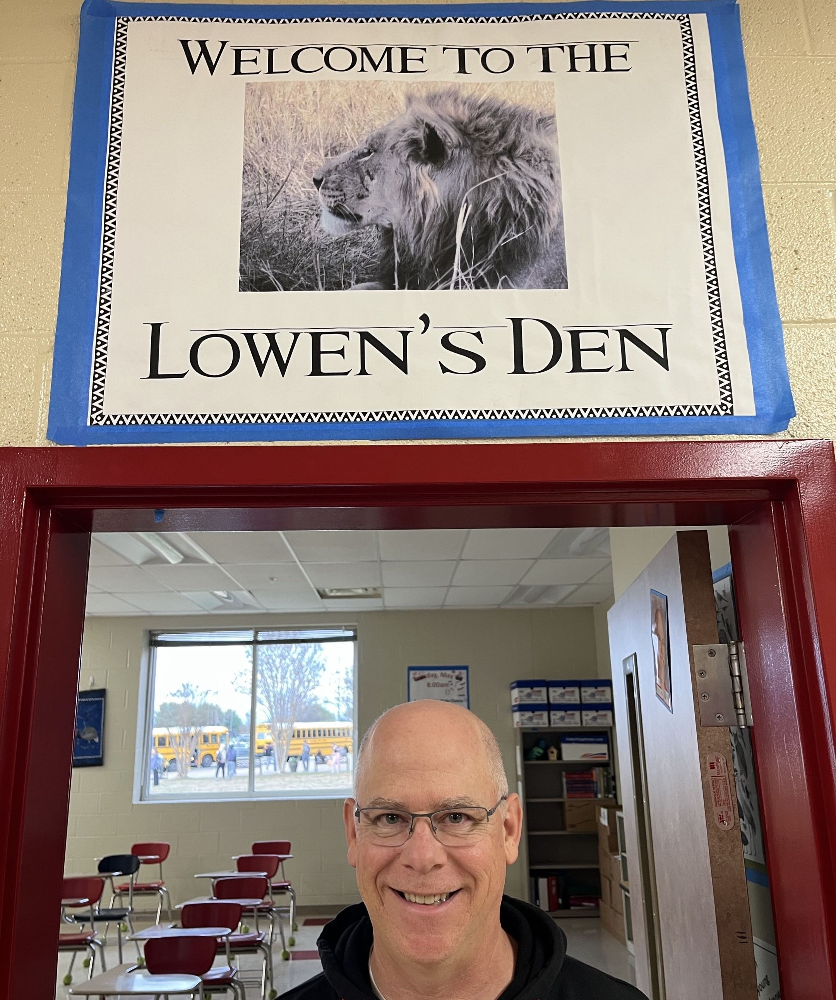
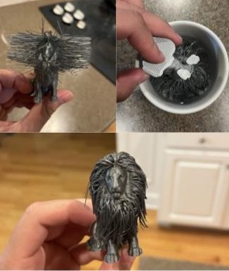
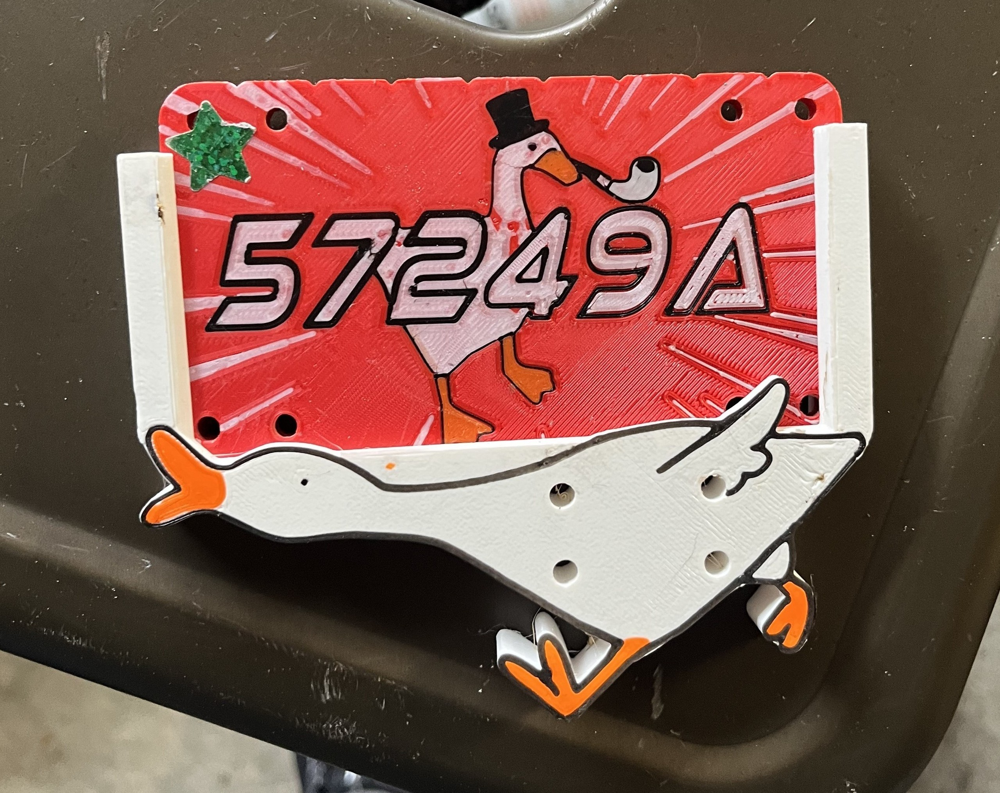
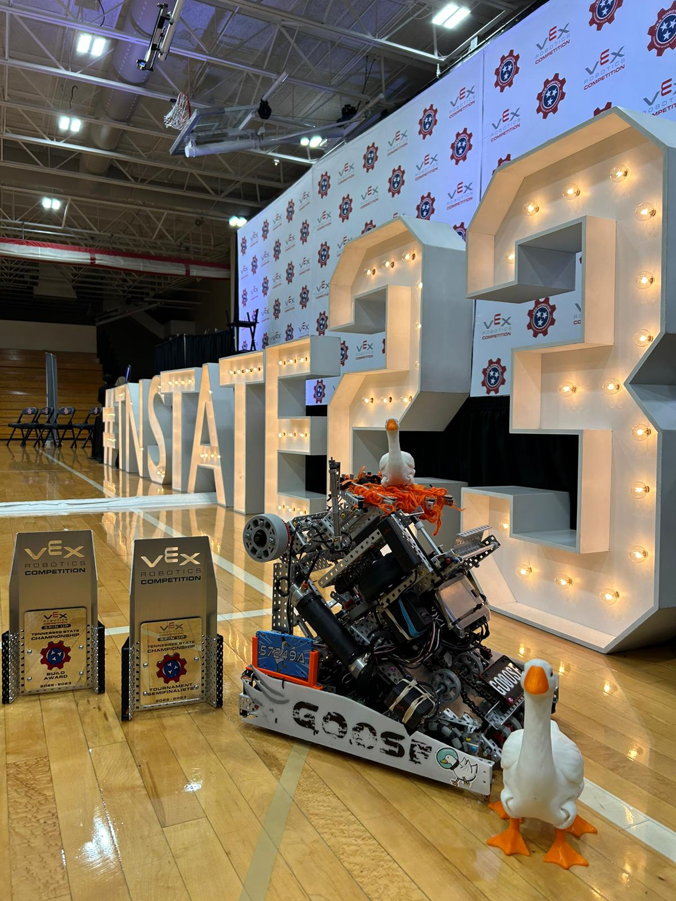
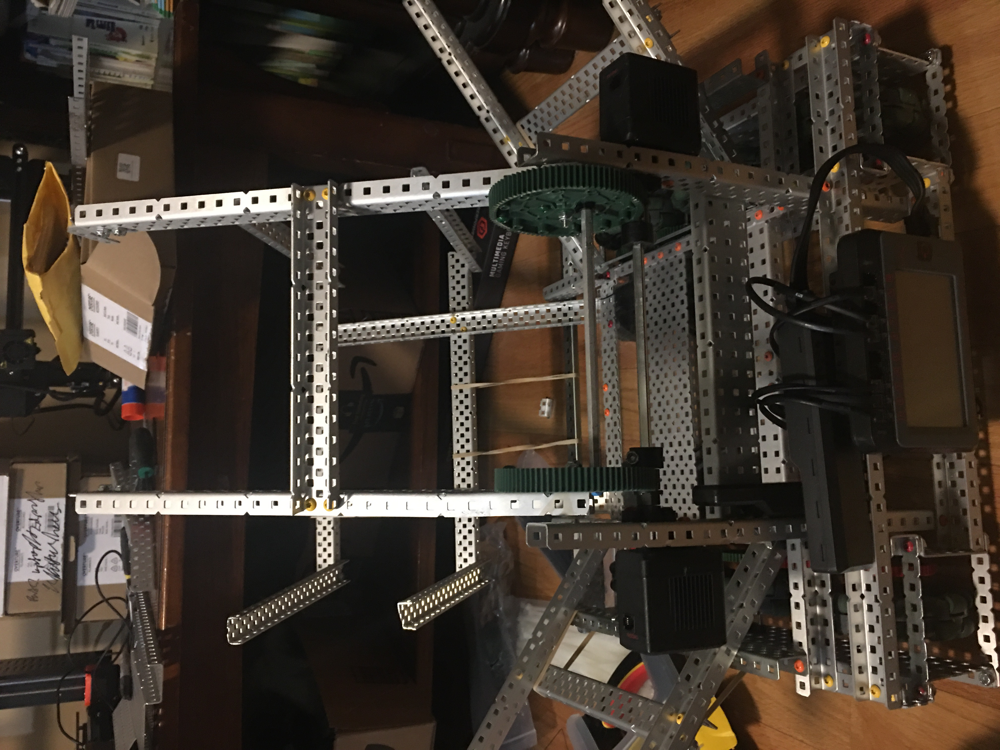
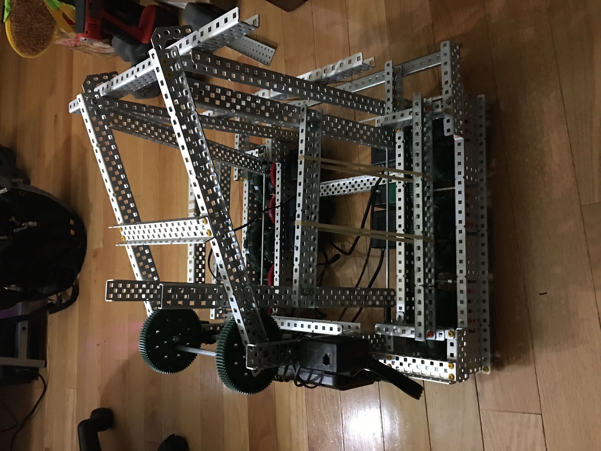
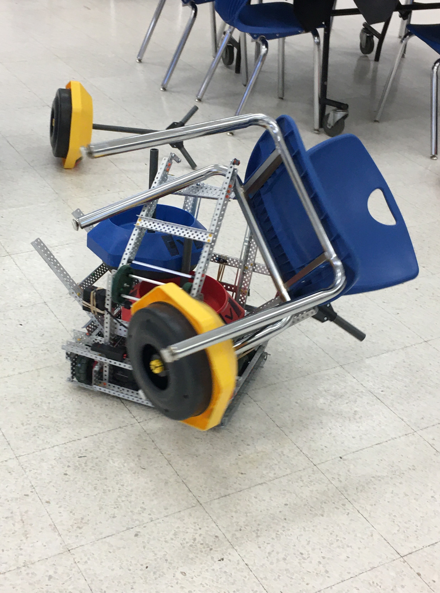

One of the kids I coached in Rock Climbing was really interested in the random 3D prints I would bring for fun, and asked me to teach a short class on 3D Printing for her Girl Scouts Troop. I ended up extending this program to be public at my local library, specifically targetting homeschoolers or younger students without access to 3D Printers in other spaces like school.
This was an expereince I really enjoyed, as I've always had an interest in teaching. It was great to share my hobby with younger kids, and I also got to tinker with the Library's printer while helping the staff set up and troubleshoot.
Brocktopus // 3D Scans Fall 2023
Uh this one is a little weird. The Rocktopus*Please google it for context so I don't look like a weirdo was pretty popular at the time, and my physics teacher, Dr. Brock, happened to be bald and shared my interest in 3D Printing. So I decided to make the Brocktopus.
I didn't own a 3D scanner, and my phone at the time didn't have LIDAR. After doing some research, I stumbled upon the idea of photogrammetry. I took a video walking around Dr. Brock to convert into a png sequence. I tried numerous (free) softwares and had with the most success on Autodesk ReCap, which isn't totally free, but it was for students under the Education License. The octopus addition was simply a boolean subtract/add in Blender.
I had to do a little bit of mesh sculpting along the way, but I didn't really know what I was doing. I kinda just clicked around with random tools until it looked okay.


So obviously once I figured it out, I didn't stop at just Dr. Brock. Here's some WIP photos of my Calculus teacher Mr. Lowen. These were also super popular with the kids I worked with, so I made a few for them too.
"Low-ctopus"? doesn't sound nearly as good as Brocktopus, so I had to do one better. Mr. Lowen had this poster above his door, so I found this really neat 'Hairy Lion' stl. The main prints as really small bridged strands, and you can dunk the print in boiling water to soften the PLA and shape the hairs.



Yeah I had a lot of fun with this. Clearly I had too much time on my hands (or I was just looking for ways to procrastinate my college applications...)
Vettweiss-Froitzheim Dice Tower Fall 2023
Wow my photography skills were not good. I guess I was in the middle of translating the Latin when taking the pictures. Ancient Roman Dice Tower- I read about it somewhere and decided to make one for my Latin Teacher one day when I got bored.
VEX Robotics Competitions Fall 2021-Spring 2024
I competed in VEX Robotics for most of high school after Covid. I also did FIRST (both FRC and FTC) in middle school with a team in a neighboring city, but my high school didn't have that, unfortunately. These robotics competitions were a huge reason I got into engineering. Plus the mechanical intuition was very helpful for future projects/jobs.
Senior year, we no longer had space to work at school, so I somehow convinced my parents to offer my garage to 20 teenage boys (thank you mom & dad). So lots of time was spent very uncomfortable and cold, but it was fun regardless.
p.s. The flip here was unintentional. We were just trying to lift off the ground lol.

My team was named "Goose", and clearly we got pretty into the theme. I also had some fun making custom decorative pieces for the bot. In the high school division, 3D printed parts aren't allowed unless they're purely cosmetic. rip
These were done with my Prusa i3 MK3S+ with a single toolhead, no AMS/MMU/etc. I learned how to do these multi color prints a few years ago and had a lot of fun with them.

The challenge for my junior year was a lot more interesting, in my opinion. This was my first time seriously competing in Vex, and I learned a LOT. This was the original Goose team and we had a 4-legged mascot.
I also was in charge of our Engineering Notebook this year. I ended up handwriting over 1,000 pages of documentation. Ouch. I didn't mind the documentation as much as I did making it legible and organized... and finding ways to mass print pictures in color for free.



This robot was from my first time doing Vex. It was built pretty much entirely on the floor of my dad's home office space, learning with a lot of Youtube videos and online resources (like Purdue's BLRS team). It wasn't exactly competitive, but it got me familiar with the structure of Vex. The next seasons went a lot smoother, and I was able to help reform the club.